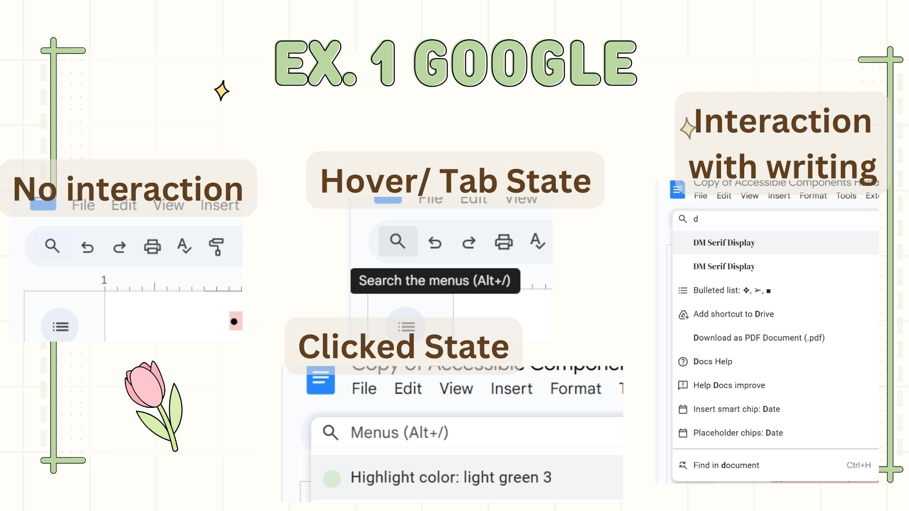
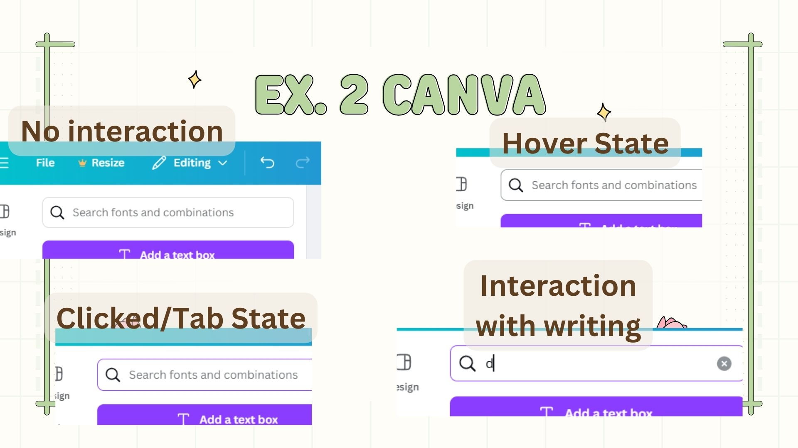
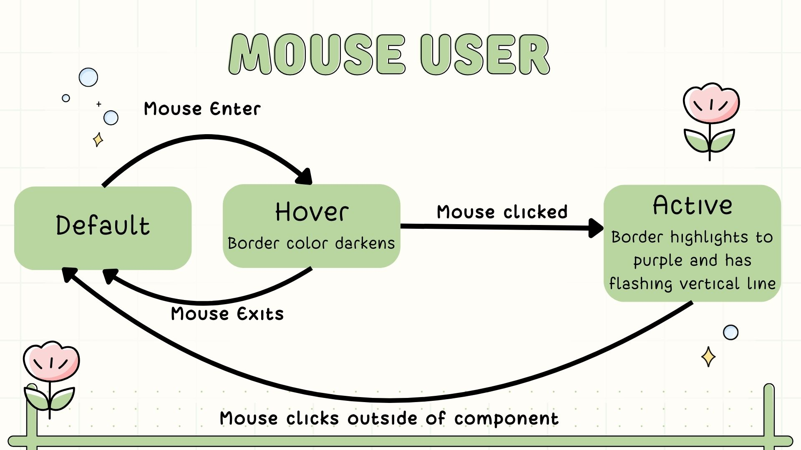
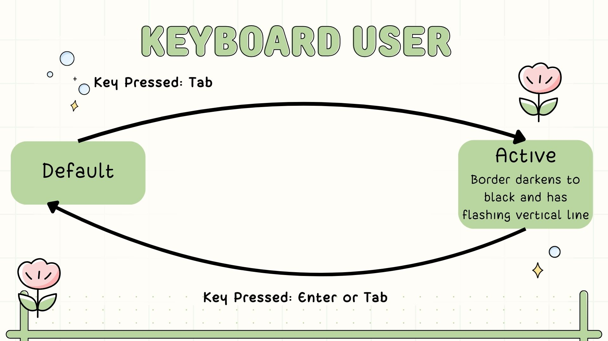
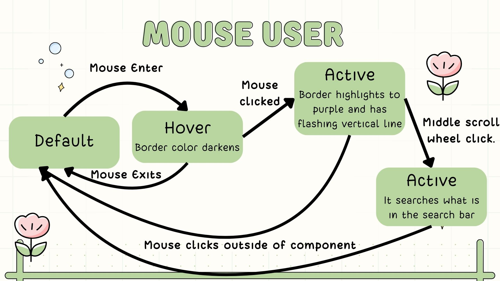
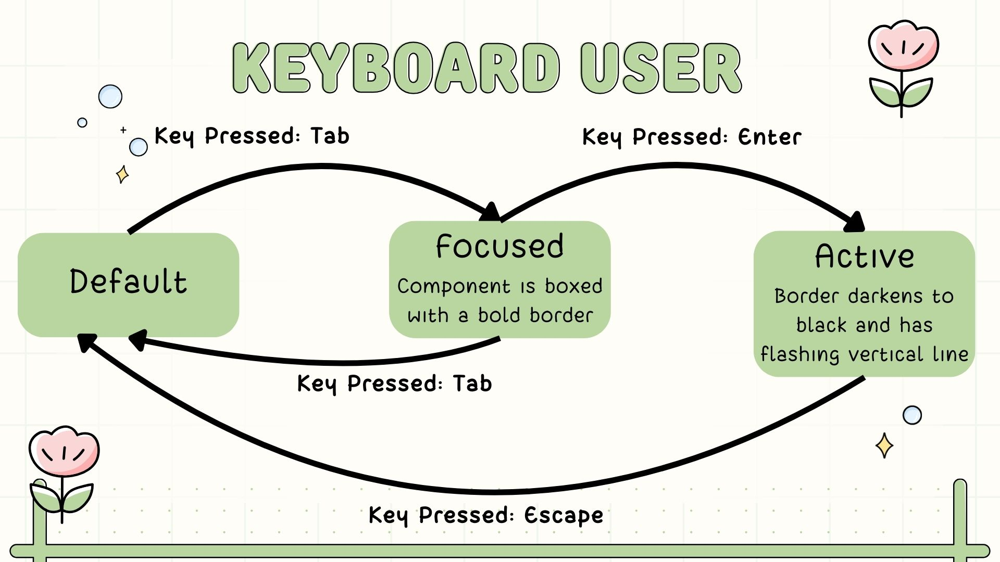
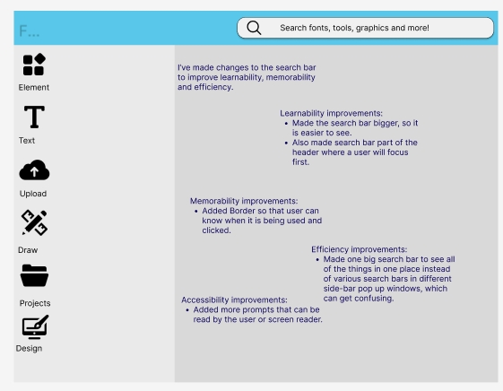
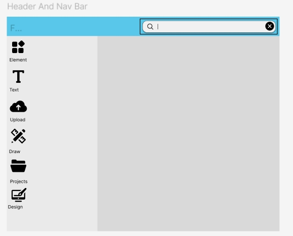

Accessible Components
Introduction
This webpage is an exploration of the User Interface and Design of Search Bars. The goal is to compare different search bars, reflect on them and to improve the design of them to make them easier to use by focusing on their learnability, memorability, efficiency and accessibility.
Part 1: Input
I focused on the search bars found in Google Docs, Canva and ABC.comScreenshots
 
Table
| Input | Google Docs | Canva | ABC.com |
|---|---|---|---|
| Mouse/Touchpad |
|
|
|
| Keyboard |
|
|
|
| Touch (if applicable) |
|
|
|
Reflection
The search bar for ABC was probably easiest to learn with an icon and the word search at the top of the page. Canva was probably the most difficult to learn because of its difficulty to navigate. You had to know that you had to click on a button so that the sidebar would show up, you then had to click on an element and then find the search bar. Google Docs was the only component that had an easily found keyboard shortcut, so it seems highest in efficiency. I would tie Google Docs and ABC for memorability, because the icon is easy enough to find both times. Canva requires some clicking around and suffers in memorability.
Part 2: Output
Table
| Output | Google Docs | Canva | ABC.com |
|---|---|---|---|
| Visual |
|
|
|
| Screen Reader |
|
|
|
| Focus Order |
|
|
|
Part 3: State Models and Component Redesign
Initial State Models for Canva Search Bar
 Revised State Models
 Revisions
 Part 4: Reflection
- I think in terms of usability the keyboard wasn't too bad, because people can use tab to access certain buttons.
- I think the changes I made solve a mismatch for screen reader users.
- One inaccessibility was the lack of keyboard shortcuts, especially in an application like Canva that is used professionally and often. It can make the user slower and makes the application more inaccessible for users who may have some visability issues.
- I think a person with visual impairments would like the bold border that ABC uses, because it makes the elements easier to see.
- I think that mouse users are most heavily prioritized. Everything on the applications I used is accessible by mouse, less so for keyboard users and even less so for screen reader users. I think there needs to be a balance, so that the user experience can be improved.